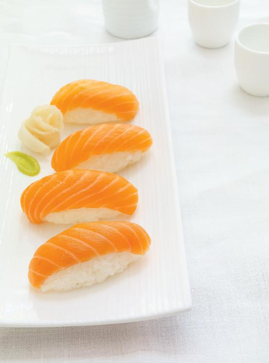

Salmon Nigiri (65 Minutes)

Description
One of my favorite foods. Ughh.... So good
Ingredients
Calrose Rice
Water
Salt
Rice Vinegar
Sugar
Sushi-grade Skinless Salmon Steak
Wasabi
Soy Sauce
Ginger
Steps
- In a bowl, cover the rice with cold water. Rinse the rice until the water becomes cloudy. Drain and repeat 4 to 5 times or until the water runs clear. Leave the rice in a strainer until thoroughly drained.
- In a saucepan over high heat, bring the rice, water and salt to a boil. Cover and cook over low heat for 15 minutes or until the liquid is completely absorbed. Remove from the heat and let rest, covered, for 10 minutes.
- Meanwhile, in a small saucepan over medium-low heat, gently warm the vinegar and sugar until the sugar has dissolved.
- Spread the cooked rice onto a baking sheet and pour the vinegar mixture overtop. Gently combine to coat and separate the grains of rice. Spread out the rice again and cover with plastic wrap. Let cool slightly.
- With a sharp knife, trim and discard the discoloured sections of the salmon. While holding the knife at 30°, finely slice the fish against the grain to obtain slices 4 inches (10 cm) long (see note). Set aside on a cold plate or refrigerate while shaping the rice balls.
- With slightly moistened hands, shape the rice into 2 1/2-inch (6 cm) oblong balls using 2 tbsp of rice for each. Spread a small amount of wasabi onto each rice ball, to taste, and cover with a salmon slice.
- Serve with the soy sauce and pickled ginger.